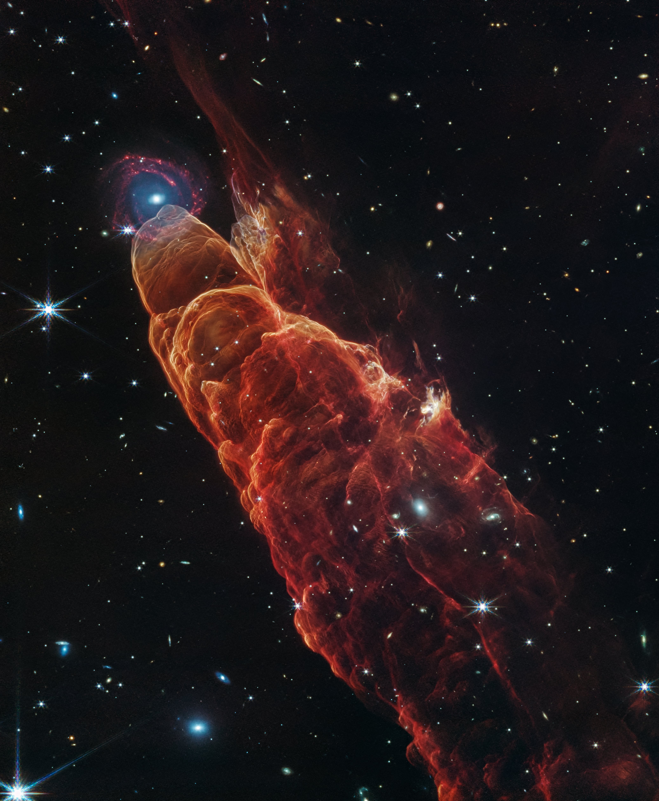

This image shows Herbig-Haro 4950, a young star system where powerful jets from a newborn star collide with surrounding gas and dust. The James Webb Space Telescope’s NIRCam and MIRI instruments reveal glowing shock waves and complex structures shaped by stellar formation.
About 625 light-years away